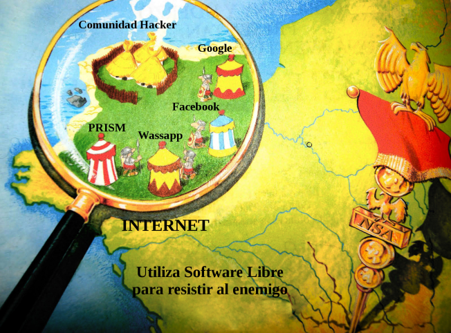
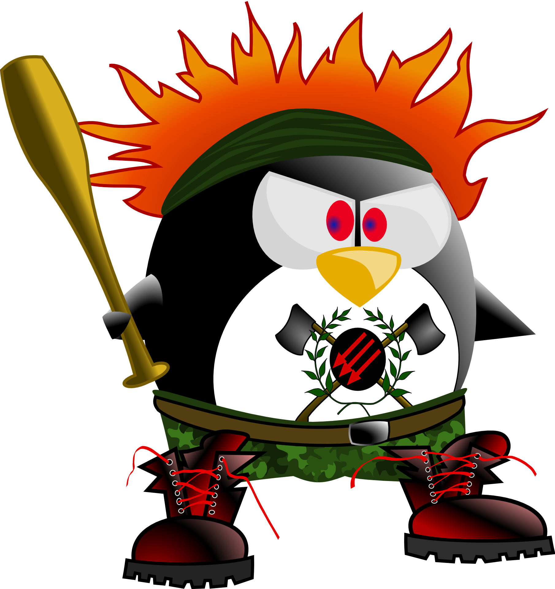

Software Lliure, Educació i Innovació
by Samuel Soriano / @sasogu
Software Lliure
Per què vaig començar a utilitzar Software Lliure?
No sóc un delincuent
Però què és el Software Lliure?
Hello World
C++
#include
int main()
{
std::cout << “Hello World\n”;
return 0;
}
Java
class helloworld
{
public static void main(String args[ ])
{
System.out.println("Hello World");
}
}
Python
print “Hello World”
Scratch

Codi ASCII (binari)
01001000011001010110110001101100011011110010 00000101011101101111011100100110110001100100
“Si suficients globus oculars miren el codi,
els errors seran evidents”. Linus Torvalds
Inconvenients
Falta d'interfícies senzilles i cuidades amb excesos de funcionalitats
Pensat per a programadors i no per a usuaris bàsics
Compatibilitat amb perifèrics
Solucions
Les interfícies van millorant i modernitzant-se
Tenim support directe dels desenvolupadors i de comunitats d'usuaris compromeses
Abans de comprar perifèrics assegurar-se que és compatible amb GNU/Linux
Educació
Open Software
Open Hardware
Open Govern
Open Educació
avantatges
Reciclatge de maquinari antic. Pros i contres.
Suport tècnic directe dels desenvolupadors
Els alumnes poden tindre en casa gratuïtament el mateix software legalment
Documents estàndards oberts faciliten compartir
Independència
Es tracta d'aprendre a conduir, no de tenir el millor cotxe.
Conceptes bàsics
De retoc fotogràfic
D'edició de vídeo
D'edició de textos
De programació
És una finalitat o un mitjà?
Accés als Continguts
però...
Zona de confort
Zona d'aprenentatge
Zona de pànic
Zona màgica
Resistència al canvi
Aprenentatge entre iguals
Comunitats

Però que inconvenient hi ha que utilitze qualsevol programari en el aula?
No dubteu que som comercials de totes les eines que utilitzem: llibres de text, sistemes operatius...
Daniel Turienzo
Model de negoci
Crear adicció
Ecosistemes tancats
Els serveis gratuïts es paguen amb la pèrdua de privadesa
Argumentar que no et preocupes pel dret a la privadesa perquè no tens gens que amagar no és diferent a dir que no et preocupes per la llibertat d'expressió perquè no tens res a dir.
Edward Snowden
#hackerchancles
tenim que ser tuxlibans?

Abans de triar una eïna assegurar-nos si n'hi ha alternativa lliure
Com a mestres volem el millor per als nostres alumnes
Necessitem planificar a llarg termini i no hipotecar-nos innecessariament amb solucions vistoses però completament tancades.
Innovació
Viva la innovació!

La tecnologia avança a molta velocitat i l'escola no es pot quedar enrere
Estar obert als canvis ja és innovar...
La formació continua del professorat hui en dia és fonamental
Si la nostra actitud és reactiva, esperant que siga l'administració la que ens proporcione tot el que necessitem per a mantenir-nos actualitzats, passarem en no molt temps a enquistar-nos
Innovació igual a il·lusió que transmet el professor
Perills
"Activisme" fer per fer...
Plenar les aules de màquines sense una finalitat clara
Inversions econòmiques grans sense planificar
Aïllament del mestre innovador
Mentalitat
de l'avar
Compartir
En Github hi ha més de 20 milions de projectes lliures
En comunitat
Aprenent junts
Només és digne de llibertat qui sap conquistar-la cada dia.
Goethe
"Que el 'programari' lliure us acompanye"
Obijuan
Aquestes transparències també són lliures i s’han fet gràcies a contingut lliure
Aquest treball es pot distribuir lliurement en els termes de la Lliciència MIT: https://ca.wikipedia.org/wiki/Llic%C3%A8ncia_X11
Podeu trobar una còpia dels fonts al meu espai en GitHub https://github.com/sasogu
Moltes gràcies!
http://sasogu.es
Vols més?:
El Software Libre y la Educación - Richard Stallman
Software libre en educación per Jordi Adell i Iolanda Bernabé
Programari lliure i govern obert
Reconeiximents:
Imatge Cubase,
Imatge Obijuan,
banner_CDG,
Altres imatges i
Reveal.js
Descarrega la presentació en pdf